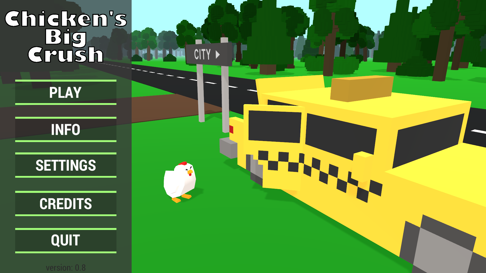
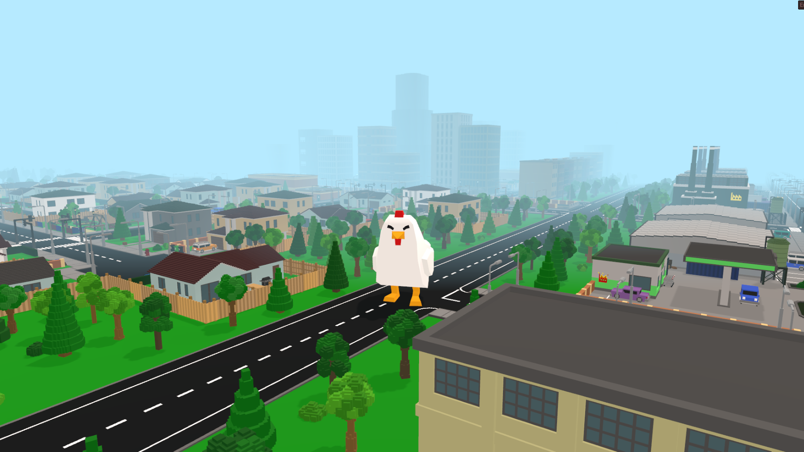
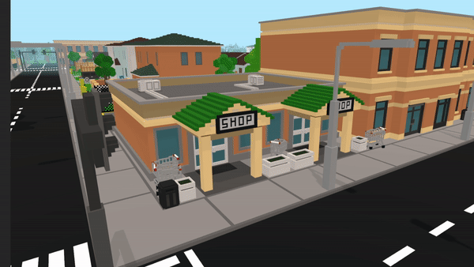

- Typ: Gra
- Okres tworzenia: 2021/2022
- Język: C#
- Technologie: Unity, grafika 2D oraz 3D
Opis
"Chicken's Big Crush" to gra w stylu voxel o kurczaku, który niszczy miasto. Ilość zdemolowanych rzeczy powoduje efekt kuli śnieżnej, gdyż ma ona wpływ
na rozmiar kurczaka, co za tym idzie z wielkością przedmiotów, które jest on w stanie rozwalić.
Wszystkie elementy gry zostały stworzone przeze mnie (poza efektami dźwiękowymi i modelem kurczaka) a w celu zwiększenia unikalności każdej rozgrywki
zaimplementowałem kilka elementów losowości.
Galeria



Odnośniki
Strona gry: Itch.io
Film z rozgrywki: YouTube